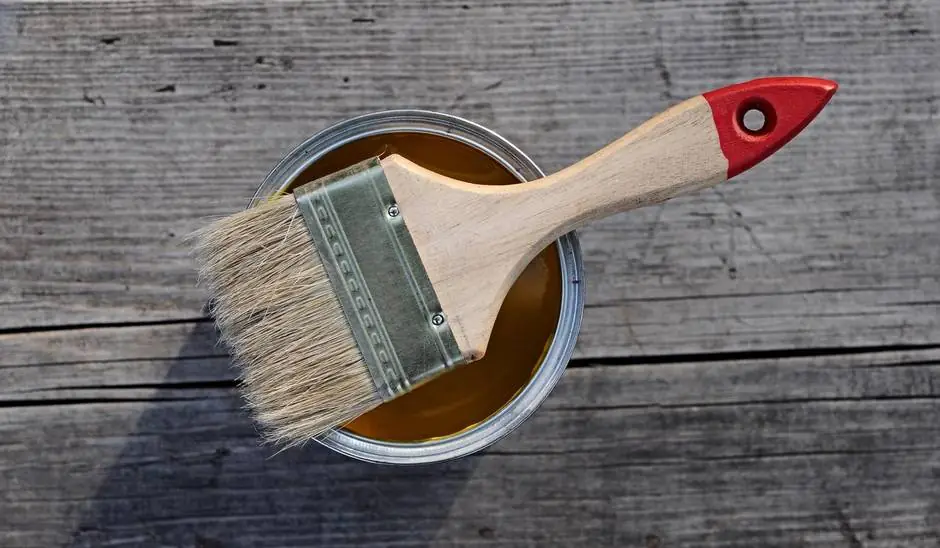

Wanneer moet je denken aan herschilderen?
Na verloop van tijd is je schilderwerk toe aan een nieuwe lik verf. Hoe weet je juist wanneer dit is? Je kan rekening houden met volgende signalen:
- Er ontstaan scheuren en blaasjes in het schilderwerk.
- Het schilderwerk verkleurt en is versleten.
- De verf verpoedert.

Wanneer kan er binnen geschilderd worden?
Een schilder is het hele jaar beschikbaar om binnen je schilderwerk bij te werken, wat voor buitenschilderwerken niet het geval is. Het is met name belangrijk dat de kamer goed wordt geventileerd en dat de temperatuur constant is want enkel dan droogt de verf snel en gelijkmatig. Er zijn een aantal situaties wanneer binnen schilderen niet mogelijk is:
- Wanneer de buitentemperatuur boven de 30 graden is. Binnen schilderen bij warm weer boven deze temperatuur heeft invloed op het uiteindelijke resultaat en dit omdat er blaasjes in het schilderwerk kunnen ontstaan waardoor je schilderwerk er niet optimaal meer uit zal zien.
- Wanneer het houtwerk vochtig is. Of er al dan niet houtrot aanwezig is, vochtig houtwerk kan je niet schilderen. Wanneer je dit wel doet, gaat de verflaag snel bladderen door het vocht in het hout. Het is dus van belang dat houtwerk eerst goed droogt, voordat de schilder ermee aan de slag gaat. Bij houtrot wordt best eerst een schrijnwerker ingeschakeld om het hout te herstellen of te vervangen.
Wanneer kan er buiten geschilderd worden?
Schilderwerk buiten krijgt het flink te verduren met alle verschillende weersomstandigheden. De gangbare periode om buitenschilderwerk te laten doen is tussen april en oktober. In deze periode is de temperatuur tussen de 10 en 25 graden, de beste temperatuur om te schilderen. De felheid van de zon en de luchtvochtigheid zijn van invloed op de droogtijd van je schilderwerk. Het schilderwerk aan de buitenkant van je huis gaat aanzienlijk korter mee dan de levensduur van het binnenschilderwerk. De kortere levensduur ligt natuurlijk aan het feit dat het schilderwerk buiten te maken krijgt met uiteenlopende weersomstandigheden.Ook bij buitenschilderwerken dien je rekening te houden met enkele situaties waarbij het niet mogelijk is te schilderen:
- Wanneer het hout vochtig is. Net zoals bij het schilderen van de binnenkant van je woning, is het belangrijk dat je hout alleen laat schilderen als het goed droog is. Vochtig hout zorgt ervoor dat je schilderwerk snel gaat bladderen.
- Wanneer de temperatuur boven de 25 graden is. Wanneer je gaat schilderen bij een temperatuur boven de 25 graden is het mogelijk dat er blaasjes ontstaan in het schilderwerk. Dit is natuurlijk niet het strakke schilderwerk dat je wilt, daarom is het beter om bij deze temperaturen niet te schilderen.
- Wanneer het vriest. Als het buiten vriest kan er onmogelijk geschilderd worden. Sowieso mag je stellen dat hoe kouder het is, hoe trager de verf kan aanpakken en dus kan drogen.
- Wanneer de zon vol op je huis staat. De schilder schildert achter de zon aan, dus nooit in de volle zon. Als de schilder wel in de volle zon aan de slag zou gaan, ontstaan er mogelijk blaasjes en scheuren in het schilderwerk en behaal je niet het optimale resultaat.
Verf beschermt niet alleen uw woning, maar bepaalt ook mee de uitstraling ervan. Twijfelt u of uw schilderwerk toe is aan vernieuwing? Tijdens een vrijblijvend plaatsbezoek bekijken we graag de staat van uw woning en adviseren we u over de meest geschikte aanpak. Ontdek meer over onze binnen- en buitenschilderwerken.
Lees ook

Laat je woning kaleien door een professional
Kaleien is tegenwoordig een populaire techniek om je gevel een nieuwe uitstraling te geven.
Lees meer
Oude verf verwijderen, hoe doe je dat?
Met een likje verf tover je oude ruimtes in een mum van tijd om. Maar eerst moet die oude verf verwijderd worden. Hoe…
Lees meer
Een vochtige ruimte schilderen: enkele tips en tricks
Het is niet evident om de juiste schilderkeuzes te maken voor een vochtige ruimte. Acrylverf en enkele andere…
Lees meerEen mooi resultaat begint met een goed gesprek.
Tijdens een vrijblijvend plaatsbezoek luisteren we naar uw wensen, geven we professioneel advies en bekijken we samen de mogelijkheden voor uw schilderwerken of interieurafwerking.